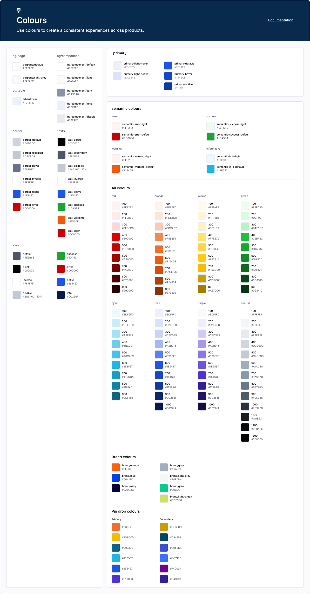
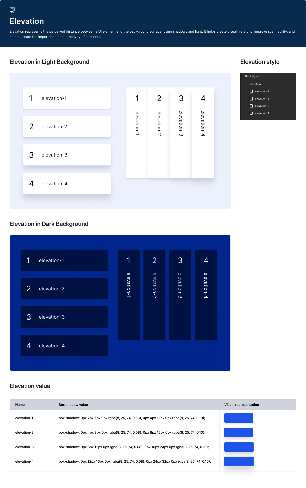
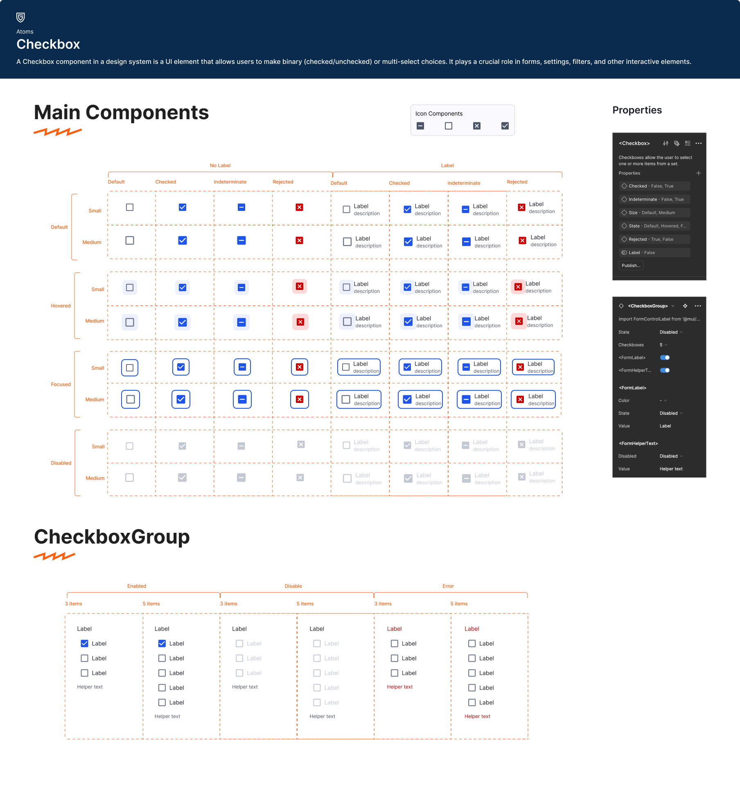
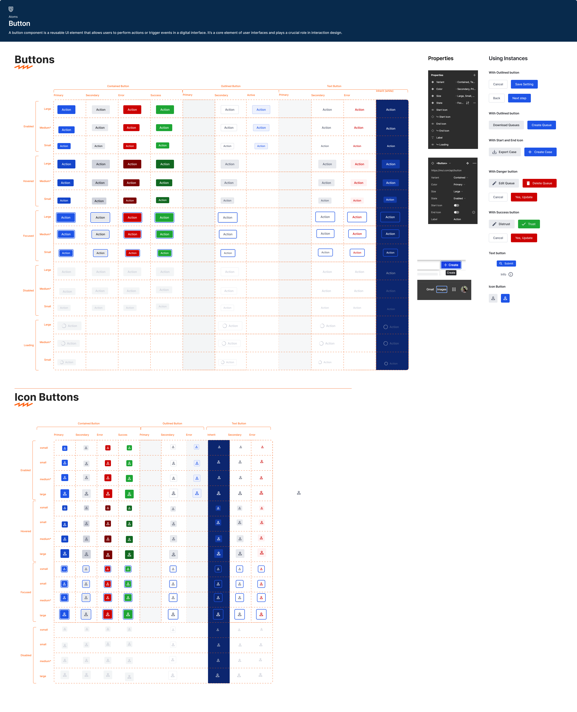

System strategy
Defined the direction, architecture, roadmap, and governance model for a company-wide design system.
GeoComply | Enterprise design system
Scaling product consistency across GeoComply by creating a shared framework for foundations, components, UX standards, documentation, engineering implementation, and long-term governance.
Case Study Highlights
Defined the direction, architecture, roadmap, and governance model for a company-wide design system.
Supported multiple products, frontend stacks, platforms, legacy constraints, and future product expansion.
Worked with frontend teams on Storybook, GitHub repositories, token feasibility, and implementation workflows.
Created a stronger unified product identity and reduced duplicated design and development effort.
Overview
GeoComply had multiple enterprise products across web, iOS, Android, and internal platforms. Over time, each product developed its own UI, UX logic, component approach, and interaction behavior.
The goal was to create a unified Design System that could standardize product experience across existing and future GeoComply products.
Strategic Scope
This was not only a UI library. It became a shared framework for design, engineering, documentation, governance, and product scalability.
Business Context
GeoComply's product ecosystem had grown across multiple teams, technologies, and product lines. Products were built with different stacks, including React, Golang, PHP, Node.js, iOS, Android, and web platforms.
Some products had dedicated design support, while others were built mainly by engineering teams using available libraries. This created a fragmented customer experience and made it harder for users to recognize products as part of one GeoComply ecosystem.
The Problem
Products had different visual systems, interaction behaviors, and product identity cues.
Teams repeatedly solved similar flows, form patterns, navigation models, and edge cases.
Multiple stacks and libraries made reuse difficult and increased implementation drift.
Accessibility, usability, and responsive behavior needed clearer system-level guidance.
My Role
I led the strategy, planning, architecture, review process, and cross-functional alignment needed to move the system from concept into Figma, Storybook, GitHub, and product adoption.
Responsibilities
Research & Discovery
Studied mature design system models, component methodologies, token structures, accessibility standards, documentation models, and enterprise UX patterns.
Reviewed existing UI components, interaction patterns, duplicated solutions, accessibility gaps, legacy products, and technical constraints across products.
Used the audit to decide what to standardize, what to rebuild, and what to keep flexible for product-specific needs.
Design System Strategy
Color, typography, spacing, grid, elevation, iconography, motion, and responsive behavior.
Atomic components, form controls, navigation, data display, feedback, and complex enterprise UI patterns.
Shared onboarding logic, interaction behavior, reusable workflow patterns, accessibility, and platform consistency rules.
Component usage, behavior rules, edge cases, design rationale, technical specifications, and implementation notes.
GeoComply Design Principles
Design interfaces that make risk, actions, and decisions understandable instantly.
Trustworthy · Clear · Predictable · Transparent
Build systems that remain reliable across massive workflows, datasets, and enterprise products.
Precise · Systematic · Scalable · Efficient
Security should protect users without slowing them down.
Effortless · Fast · Focused · Seamless
Unified experiences strengthen product trust and usability.
Unified · Familiar · Cohesive · Reliable
Support real-world enterprise workflows, not idealized scenarios.
Operational · Practical · Resilient · Functional
Inclusive experiences create stronger products for everyone.
Inclusive · Readable · Accessible · Universal
Design systems are shared operational tools between Design and Engineering.
Collaborative · Modular · Maintainable · Connected
Cross-Platform Thinking
The system needed to support web applications, iOS, Android, responsive layouts, legacy products, future products, and multiple frontend technologies. Because of this, we designed around shared principles, reusable logic, scalable behaviors, and consistent product patterns.
Engineering Collaboration
We held technical discovery sessions to understand existing frontend architecture, current component libraries, technology constraints, Storybook structure, GitHub repositories, design token feasibility, and which parts could be automated.
Hi-Fi Design

Foundational color guidance for consistent visual language across GeoComply products.

Elevation rules helped standardize depth, hierarchy, and surface behavior across interfaces.

Component states and usage patterns supported consistent form interactions.

Button variants, states, and structure created a shared foundation for product actions.
Workflow & Governance
Automation & Integration
The team built a complete Figma Design System, Storybook integration, GitHub component repositories, token-based workflows, and internal automation tools.
Workflow Improvements
Challenges
The project had multiple technology stacks, legacy systems with inconsistent quality, different product priorities, resource changes during development, and high-priority product deadlines competing with Design System work.
The key challenge was balancing system standardization with real product delivery constraints.
Outcome & Impact
Reflection
This project strengthened my experience in leading Design Systems at enterprise scale. The most important lesson was that a successful Design System is not only about components. It requires strategy, governance, technical collaboration, documentation, adoption, and continuous improvement.
For GeoComply, the Design System helped shift product design from fragmented execution toward a more scalable, consistent, and platform-level design approach.
Contact
Open to Senior Product Designer, UX Designer, and Design System opportunities.